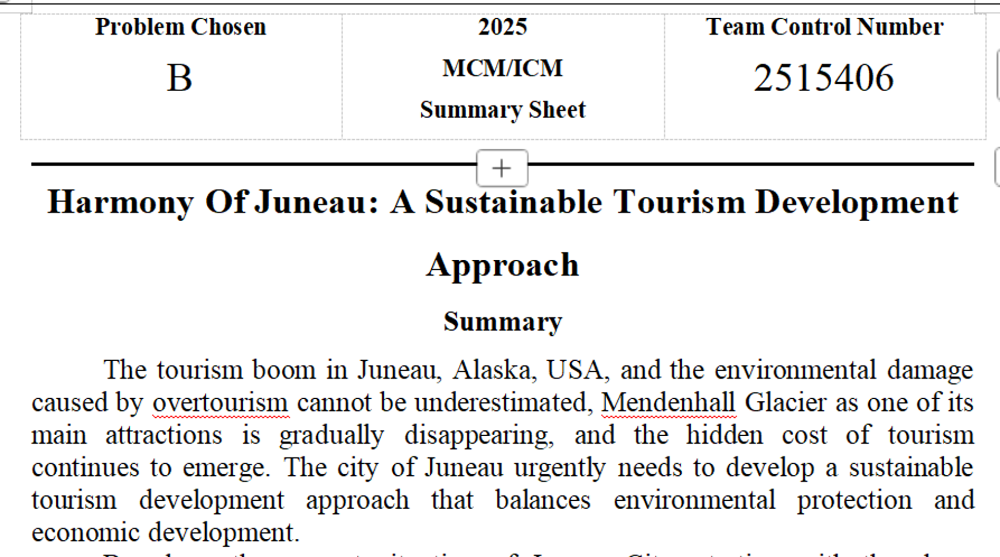
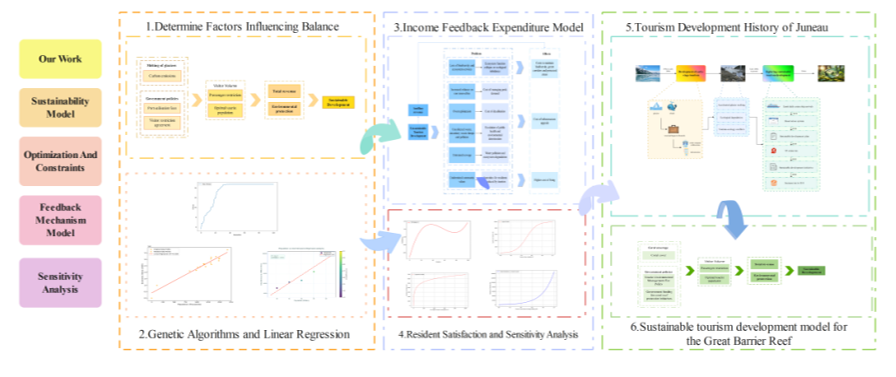
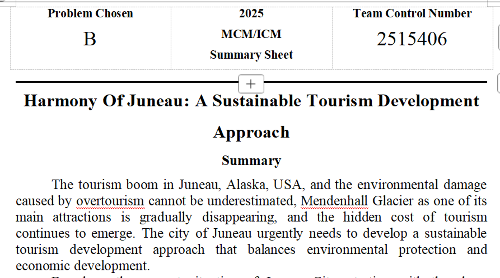
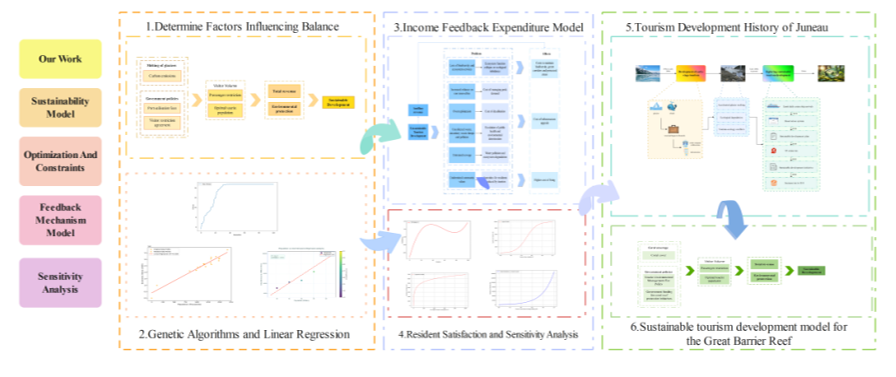

基于点云神经网络的脑疾病纤维拓扑结构识别方法研究
国创项目项目描述
研究基于点云神经网络的脑疾病纤维拓扑结构识别方法，为脑疾病诊断提供新的技术手段。
项目技术
点云处理、深度学习、神经网络、医学图像分析
项目成果
建立了基于点云数据的脑纤维拓扑结构识别模型，提高了识别准确率。

研究基于点云神经网络的脑疾病纤维拓扑结构识别方法，为脑疾病诊断提供新的技术手段。
点云处理、深度学习、神经网络、医学图像分析
建立了基于点云数据的脑纤维拓扑结构识别模型，提高了识别准确率。
研究多模态增量学习在自动驾驶感知中的应用，提高系统对复杂环境的适应能力。
多模态学习、增量学习、计算机视觉、自动驾驶
优秀结题，建立了多模态增量学习框架，提升了感知系统的鲁棒性。
研究高空无人机目标检测与跟踪系统，实现轻量化和实时性能的平衡。
目标检测、目标跟踪、多模态融合、轻量化网络
设计了轻量化的检测跟踪网络，在保证精度的同时显著提升了推理速度。

 


